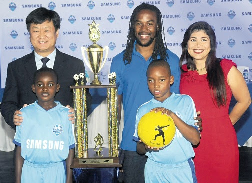
SAMSUNG • REGIONAL GTM
From campaign strategy to market visibility
Integrated regional programs combined product launches, channel activation, advertising, events and media relations across Caribbean markets.
Field, Partner & Regional Marketing Leader
20+ years turning complex technology, markets and partnerships into go-to-market programs that move.
FORTUNE 500 TECHNOLOGY • AMERICAS & LATAM • GLOBAL PROGRAMS
I connect Sales, technical teams, partners and regional stakeholders to turn complex priorities into programs that build awareness, accelerate pipeline and support growth.
About
My career has taken me through technology organizations including Motorola, BlackBerry, Samsung, IK Multimedia, Omnissa and now GitHub, working across the U.S., Latin America, the Caribbean and global markets.
I started on the project and product side of technology before moving more deeply into marketing. That foundation shaped how I work today: comfortable with complex programs, multiple markets, product launches, Sales, partners, technical teams, agencies, budgets and deadlines that all need to become one cohesive plan.
My experience spans regional and field marketing, partner and channel marketing, GTM strategy, integrated campaigns, demand generation, product launches, alliances, marketing operations, sales enablement, MDF programs and public-sector initiatives. I’m bilingual in English and Spanish, with working Portuguese.
Portfolio
GITHUB • LATAM
Supporting the LATAM Revenue organization through webinars, in-person events and regional activations, partnering with account executives, solution engineers and technical teams to build awareness and solution adoption.
OMNISSA • PARTNER ECOSYSTEM
$221K in MDF supported six Federal/SLED events and influenced $701K+ in pipeline, while the partner showcase page grew 987% YoY and internal site engagement grew 448%.
OMNISSA • MDF
Managed an approximately $800K quarterly Americas partner marketing budget, aligning MDF investments to strategic priorities and delivering 20%+ quarterly ROI.
SAMSUNG • CARIBBEAN
Led regional GTM across mobile, consumer electronics and enterprise solutions with a $1M+ quarterly budget, including Knox commercialization and a government cybersecurity deployment in Trinidad & Tobago.
BLACKBERRY • LATAM
Built scalable LATAM marketing operations across 50+ vendors, led RFPs for regional warehousing, and conceived a virtual marketing materials platform developed by an external software partner.
IK MULTIMEDIA • GLOBAL
Coordinated global hardware and software launches across North America, LATAM and EMEA and built the Spanish-language social presence from the ground up, generating 300% follower growth in the first months.
The Through-Line
My portfolio spans the full operating arc of technology marketing, from project plans, product roadmaps and specifications to campaigns, enablement, launches, media, events, digital programs and performance analysis.
01
STRATEGY
02
PLAN
03
BUILD
04
LAUNCH
05
ENABLE
06
MEASURE
07
OPTIMIZE

SAMSUNG • REGIONAL GTM
Integrated regional programs combined product launches, channel activation, advertising, events and media relations across Caribbean markets.
BLACKBERRY • LATAM OPERATIONS
Operational infrastructure, vendor ecosystems, RFP leadership, scalable processes and digital tools helped regional marketing execute with greater consistency.
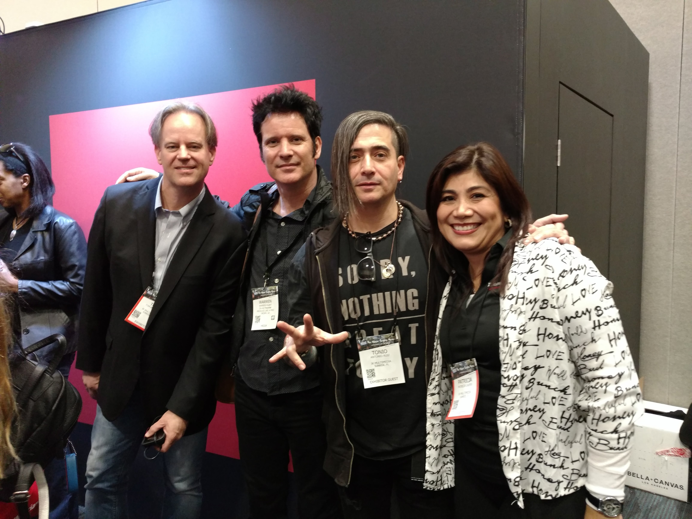
IK MULTIMEDIA • DIGITAL & GLOBAL
Global launches and Spanish-language digital campaigns paired content, paid social, audience development and performance reporting to build measurable market presence.
What the work shows
20+
years across technology marketing, product, programs and operations
$1M+
quarterly regional budget leadership at Samsung
20%+
quarterly MDF ROI achieved through partner investment optimization at Omnissa
Career
2026 – Present
LATAM Marketing Manager (Contract)
Regional and field marketing supporting the LATAM Revenue organization, regional activations, webinars, events, technical collaboration and Microsoft-aligned opportunities.
2023 – 2026
Partner Marketing Manager, Americas / Global Campaigns & Enablement
Partner, channel and alliance marketing for Workspace ONE and Horizon across the Americas, with global enablement and campaign support.
2017 – 2018
Global Marketing Program Manager
Global product launch, lifecycle, digital, content, events and distributor/reseller marketing across hardware and software.
2013 – 2015
Senior Marketing Manager, Caribbean
Regional GTM, integrated campaigns, channel marketing, enterprise solutions, public sector and product launches.
2008 – 2012
Regional Manager, Marketing Operations, Latin America
LATAM marketing operations, GTM infrastructure, enterprise and government programs, procurement, vendors and RFP leadership.
2004 – 2008
Regional Key Account Manager, Sprint
GTM and 360° marketing for Sprint launches across retail, digital, field, partner and B2B/B2C channels, including public-safety initiatives.
2003 – 2004
Project Resource Manager, Crisis Management
Resource coordination, priorities, schedules and cross-functional requirements supporting crisis-management programs.
2001 – 2002
Project / Product Manager, Messaging Division
Product lifecycle management for messaging devices, including end-of-life planning, replacement strategy and cross-functional dependencies.
Earlier Career
Project Administrator, iDEN Subscriber Division
Managed concurrent schedules and change-control governance across the iDEN organization; recognized with the Nikki Petratos Award for Teaching and Helping.
Capabilities
Field & Regional Marketing • LATAM & Americas • GTM Strategy • Demand Generation • Integrated Campaigns • ABM • Product Launches • Public Sector / Federal / SLED
Partner & Channel Marketing • Alliances • Partner Ecosystems • Enablement • Sales Enablement • MDF Strategy • Pipeline Acceleration • Event & Webinar Marketing
Marketing Operations • Program Management • Budget & ROI • Vendor & Agency Management • Analytics • Executive Reporting • AI-Assisted Marketing Workflows
Beyond Work
Music and performance have been part of my life since I was young and remain an important creative outlet today. I also love travel, photography, continuous learning and community service.
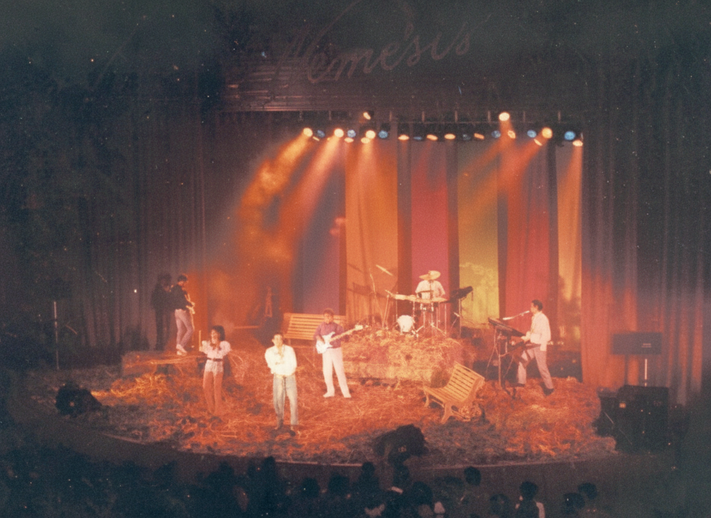
Highlights
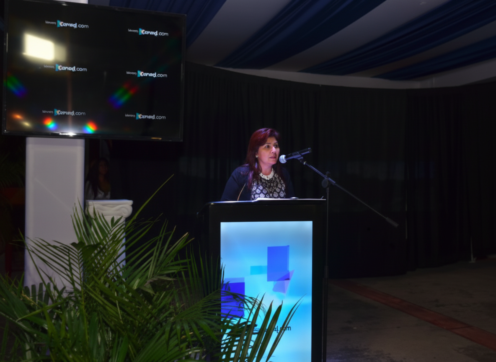
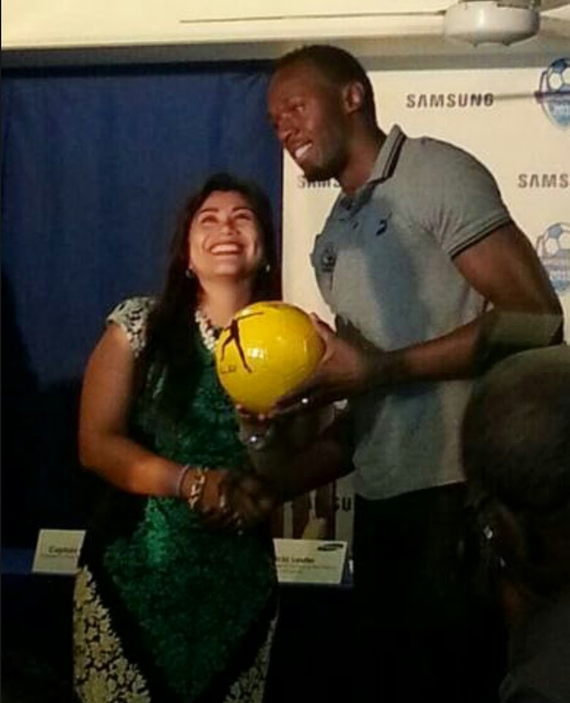
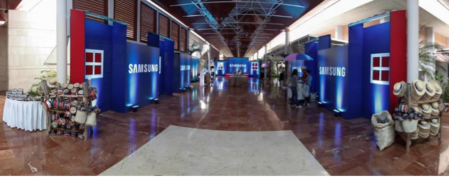
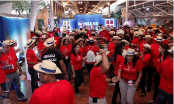
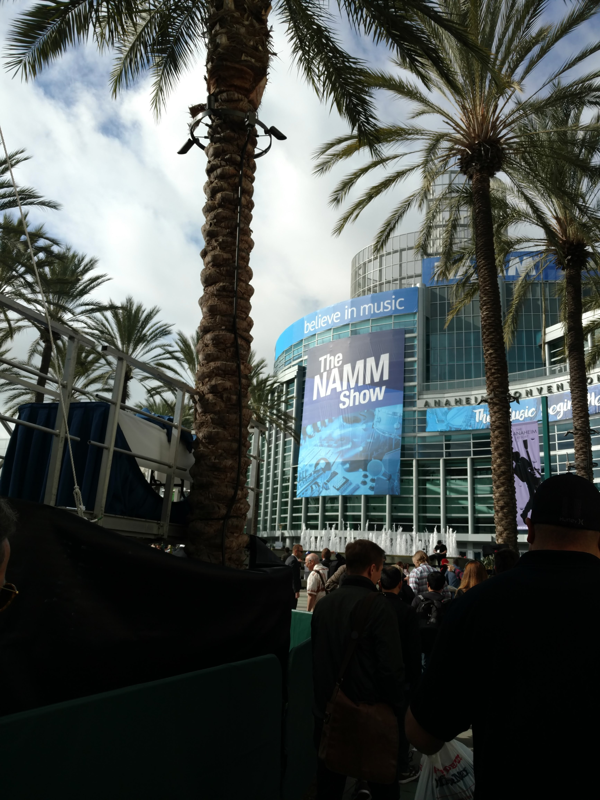
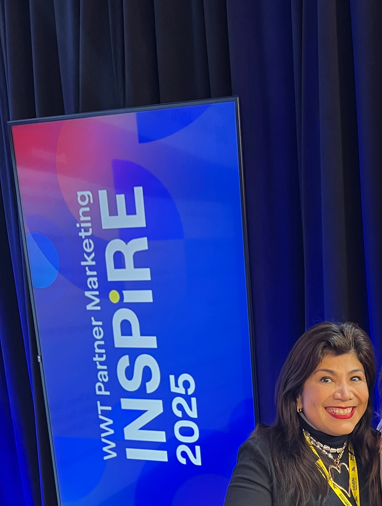
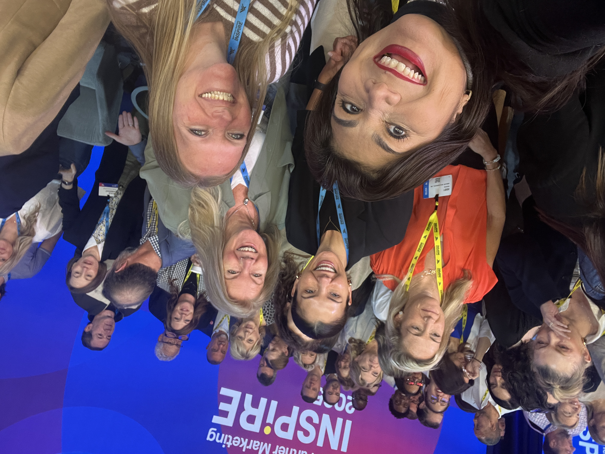
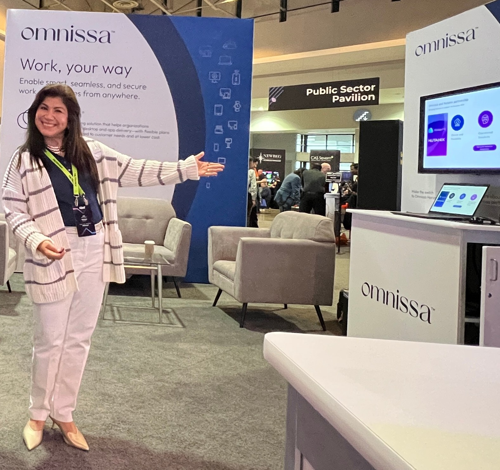
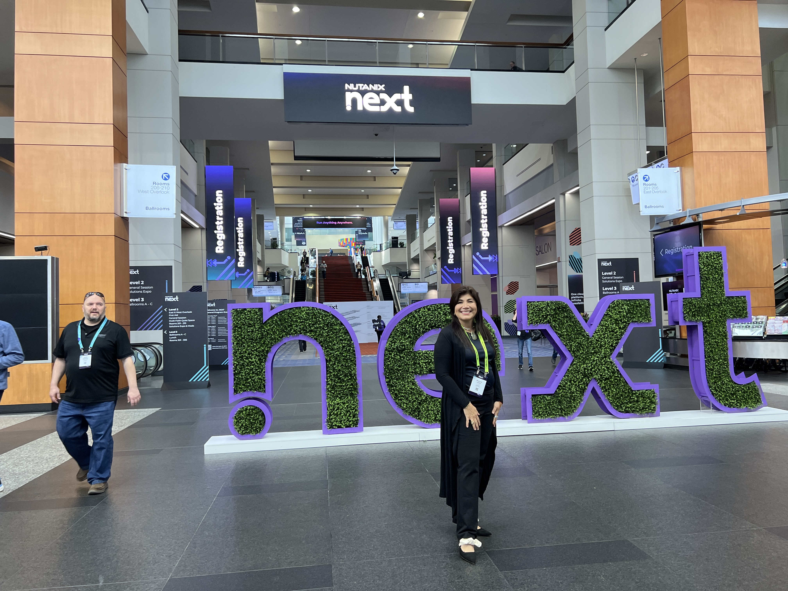
Education
George Washington University
Universidad Autónoma de Bucaramanga
Universidad Autónoma de Bucaramanga
Motorola